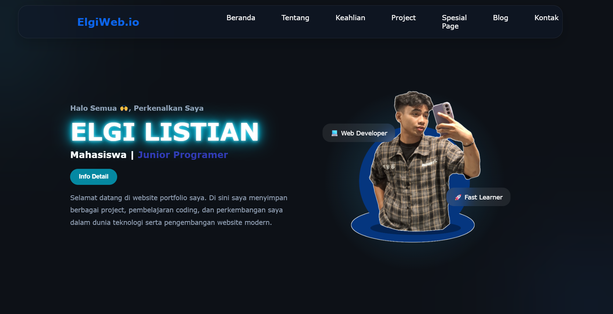

halo semua Perkenalkan!
Elgi Listiani
Selamat datang Diwebite saya , ini adalah portofolio saya dalam pembuatan tugas praktikum pemrograman website

Selamat datang Diwebite saya , ini adalah portofolio saya dalam pembuatan tugas praktikum pemrograman website
Sebelumnya saya Suka Ber-ekperimen dalam bidang Pengemabngan Web , Dan sebelumnya saya juga sudah pernah membuat Web pribadi sendiri disini saya mengulang dan mengetas kemampuan saya, saya mengembangkan website ini dalam bentuk sederhana sebgai lending page , selanjutnya saya akan membuat lebih Baik Lagi

webiste pribadi yang saya kembangkan sendiri, website itu ada sebelum website ini ada, dan saya memilih agar website itu sebagai final webportofolio saya
lihat project
Website yang saya buat menggunakan php dan berbasis databese yang digunakan dalam menejemen tugas
lihat project
Merancang sebuah sistem rumah sakit dalam tugas pengembangan perangkat lunak yang terdiri dari admin, user dan dokter
lihat project